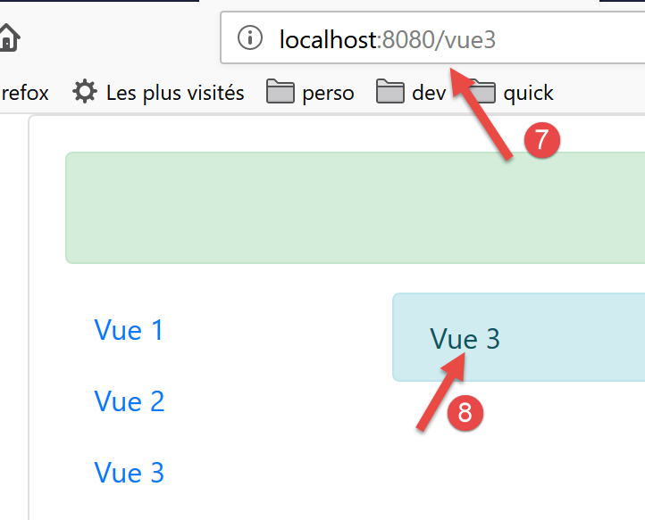

13. 项目 [vuejs-11]：路由与导航
路由功能将使用户能够在应用程序的不同页面之间进行导航。
项目结构如下：

13.1. 安装依赖项
[Vue.js] 中的路由功能需要依赖 [vue-router]：

- 在 [1-3] 中，安装了依赖项 [vue-router]；
- 在 [4-6] 中，安装依赖项后，文件 [package.json] 已被修改；
13.2. 路由脚本 [router.js]
应用程序的导航规则记录在文件 [router.js] 中（脚本名称可以是任意名称）：
// 路由所需的导入
import Vue from 'vue'
import VueRouter from 'vue-router'
// 路由插件
Vue.use(VueRouter)
// 路由的目标组件
import Component1 from './components/Component1.vue'
import Component2 from './components/Component2.vue'
import Component3 from './components/Component3.vue'
// 应用程序的路由
const routes = [
// 首页
{ path: '/', name: 'home', component: Component1 },
// 组件1
{
path: '/vue1', name: 'vue1', component: Component1
},
{
// 组件2
path: '/vue2', name: 'vue2', component: Component2
},
// 组件3
{
path: '/vue3', name: 'vue3', component: Component3
},
]
// 路由器
const router = new VueRouter({
routes,
mode: 'history',
})
// 路由器导出
export default router
注释
- 脚本 [router.js] 将确定我们应用程序的路由规则；
- 第1-6行：启用路由所需的[vue-router]插件。 此启用操作需要导入类/函数 [Vue]（第 2 行）以及路由插件（第 3 行）。该插件已随我们刚刚安装的依赖项 [router] 一起安装；
- 第 8-11 行：导入路由的目标视图；
- 第 15-21 行：定义路由表。该表中的每个元素都是一个具有以下属性的对象：
- [path]：视图的 URL，即我们希望在浏览器 [URL] 字段中显示的视图。此处可自由填写任意内容；
- [name]：路由名称。此处同样可以自由设定；
- [component]：用于显示该视图的组件。此处必须是已存在的组件；
因此这里将有四条路由 [/, /vue1, /vue2, /vue3]。
- 第33-36行：路由器是第3行导入的[VueRouter]类的实例。此处调用[VueRouter]的构造函数时，传入了两个参数：
- 应用程序的路由；
- 在浏览器中写入 URL 的模式：默认模式 [hash] 将 URL 以 [localhost:8080/#/vue1] 的形式写入（# 表示哈希）。 [history] 模式会移除 # [localhost:8080/vue1]；
- 第 39 行：导出路由器；
13.3. 主脚本 [main.js]
主脚本 [main.js] 如下：
// 导入
import Vue from 'vue'
import App from './App.vue'
// 插件
import BootstrapVue from 'bootstrap-vue'
Vue.use(BootstrapVue);
// 引导程序
import 'bootstrap/dist/css/bootstrap.css'
import 'bootstrap-vue/dist/bootstrap-vue.css'
// 路由器
import monRouteur from './router'
// 配置
Vue.config.productionTip = false
// 项目实例化[App]
new Vue({
name: "app",
// 主视图
render: h => h(App),
// 路由器
router: monRouteur,
}).$mount('#应用程序')
注释
- 第14行：导入由脚本[router.js]导出的路由器；
- 第25行：该路由器作为参数传递给了类[Vue]的构造函数，该构造函数将显示主视图[App]，并将其与视图的属性[router]关联；
13.4. 主视图 [App]
主视图的代码如下：
<template>
<div class="container">
<b-card>
<!-- 一条消息 -->
<b-alert show variant="success" align="center">
<h4>[vuejs-11] : routage et navigation</h4>
</b-alert>
<!-- 当前路由视图 -->
<router-view />
</b-card>
</div>
</template>
<script>
export default {
name: "app"
};
</script>
注释
- 第 9 行：显示当前路由视图。只有在视图的 [router] 属性已初始化时，才会识别 <router-view> 标签；
13.5. 视图的版面布局
视图的版面布局由以下组件 [Layout] 负责：
<template>
<!-- 行 -->
<div>
<b-row>
<!-- 三列区域 -->
<b-col cols="2" v-if="left">
<slot name="left" />
</b-col>
<!-- 九列区域 -->
<b-col cols="10" v-if="right">
<slot name="right" />
</b-col>
</b-row>
</div>
</template>
<script>
export default {
// 参数
props: {
left: {
type: Boolean
},
right: {
type: Boolean
}
}
};
</script>
我们在第 [vuejs-06] 段落中的 [vuejs-06] 项目中已经使用并解释过这种布局。
13.6. 导航组件
[Navigation]组件为用户提供导航菜单：

生成 [1] 块的组件如下：
<template>
<!-- 三选项 Bootstrap 菜单 -->
<b-nav vertical>
<b-nav-item to="/vue1" exact exact-active-class="active">Vue 1</b-nav-item>
<b-nav-item to="/vue2" exact exact-active-class="active">Vue 2</b-nav-item>
<b-nav-item to="/vue3" exact exact-active-class="active">Vue 3</b-nav-item>
</b-nav>
</template>
- 该代码生成包含三个导航链接的第 1 个区块；
- <b-nav-item> 标签的 [to] 属性必须与应用程序路由器中路由的 [path] 属性之一相对应；
13.7. 视图
视图 1 如下：

[3-4] 区域由以下 [Component1] 组件生成：
<template>
<Layout :left="true" :right="true">
<!-- 导航 -->
<Navigation slot="left" />
<!-- 消息-->
<b-alert show variant="primary" slot="right">Vue 1</b-alert>
</Layout>
</template>
<script>
import Navigation from './Navigation';
import Layout from './Layout';
export default {
name: "component1",
// 使用的组件
components: {
Layout, Navigation
}
};
</script>
注释
- 第 2 行：视图 1 使用组件 [Layout] 的布局，该布局由两个名为 [left, right] 的插槽组成；
- 第 4 行：导航菜单放置在左侧插槽中。即上图所示的 [3] 区域；
- 第 6 行：右侧插槽中放置了一条消息。即上图所示的 [4] 区域；
视图2和3与此类似。
由组件 [Component2] 显示的视图 2：
<!-- 视图 2 -->
<template>
<Layout :left="true" :right="true">
<!-- 导航 -->
<Navigation slot="left" />
<!-- 消息 -->
<b-alert show variant="secondary" slot="right">Vue 2</b-alert>
</Layout>
</template>
<script>
import Navigation from './Navigation';
import Layout from './Layout';
export default {
name: "component2",
// 视图组件
components: {
Layout, Navigation
}
};
</script>
由组件 [Component3] 显示的视图 3：
<!-- 视图 3 -->
<template>
<Layout :left="true" :right="true">
<!-- 导航 -->
<Navigation slot="left" />
<!-- 消息 -->
<b-alert show variant="info" slot="right">Vue 3</b-alert>
</Layout>
</template>
<script>
import Navigation from "./Navigation";
import Layout from "./Layout";
export default {
name: "component3",
// 视图组件
components: {
Layout,
Navigation
}
};
</script>
13.8. 项目运行

运行时显示以下视图：

- 在 [1] 中，URL 对应的是 [http://localhost:8080]。此时执行了以下路由规则：
{ path: '/', name: 'home', component: Component1 }
因此显示的是组件 [Component1]。它显示视图 1 [2]。现在点击链接 [Vue 1]，其代码如下：
<b-nav-item to="/vue1" exact exact-active-class="active">Vue 1</b-nav-item>
显示内容变为：
- 在 [3] 中，执行了以下路由规则：
path: '/vue1', name: 'vue1', component: Component1
因此再次显示的是组件 [Component1]，即视图 1 [4]。现在点击链接 [Vue 2]，其代码如下：
<b-nav-item to="/vue2" exact exact-active-class="active">Vue 2</b-nav-item>
此时的新视图如下：

- 在 [5] 中，执行了以下路由规则：
path: '/vue2', name: 'vue2', component: Component2
因此显示的是组件 [Component2]，即视图 2。如果现在我们点击链接 [Vue 3]，其代码如下：
<b-nav-item to="/vue3" exact exact-active-class="active">Vue 3</b-nav-item>
我们将获得以下新视图：

- 在 [6] 中，执行了以下路由规则：
path: '/vue3', name: 'vue3', component: Component3
因此显示的是组件 [Component3]，即视图 3 [8]。